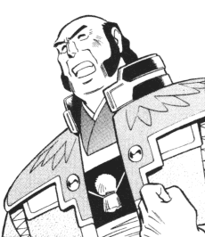

Site Format |
Some important notes and information about the Tenchi fan fiction posted on this page and other useful information. It is highly recommended reading this section before continuing your visit to this site. |
This site is divided into four major divisions: Regular, Crossovers, Lemon, and Misc. Regular are stories that are not lemons, crossovers, or tangents. Crossovers are stories that mix Tenchi Muyo with other series. Lemons contain adult material not suited for minors. Misc contains tangential works such as poems and spam fics (Can also be considered omake). They are sorted alphabetically by author's last name or pen/nick name. So make sure you remember the author's name, or you may get lost finding the story you wish to read.
Newer stories are listed chronologically at the main page for each sub-division. Older entries can be found in the grouped sub-sections that are sorted by author. Each sub-division is grouped by author's last name.
Each fan fiction will have the following information (kind of obvious, but you never know... ^_-) If a author has multiple fics it will be listed after their name.
FanFic Entry Example
| Plain Example | Real Example |
Author Name (Author E-mail Address)
|
Nikholas F. Toledo Zu
(Niftol@i-manila.com.ph)
|
An explanation to some of the tags on the bottom description line.
KB [File Size] = Indicates link is to a TXT file of the respected size.
(Multipart) = Represents a link to a sub page for a multiple entry story.
(Link) = A link to an out of site page.
An explanation of revision tags listed after the title of each fan fic. This is generally reserved for the new section.
(NEW) = New fan fiction, placed at the top of their respective subsection.
(Updated) = Stories that were revised/updated by the author.
(Resorted) = Stories that were displaced and are now in the correct section.
(Deleted) = Stories that have been deleted as requested by the author.
Please note that older fan fiction (older than 4/4/1998) do not have a date stamp. This was due to the fact that the dating system has yet been implemented. All newer/revised fan fiction will now have a date tag to help readers identify the age of the fan fiction in the archive.
All fan fiction on this page can be viewed in a simple text browser such as Microsoft NotePad, Write, or WordPad. Stories are formatted in the simplest format so they can be read on different computer systems. If you have problems reading any fan fiction on this site please inform me. If you wish to submit your work, visit "How to add a FanFic".
A Special Note
Occasionally I get request that certain fics get removed from the archive due to the offensive nature of the material/scenes depicted in the story. I will not remove any story. The following is a list of reason why.
I do not have the time to read/screen all entries in the archive. There are just too many.
Only the author can remove their story.
I do not believe in censorship. I believe in free speech. The internet is a media which you can not easily censor things. The government tried, but failed.
I won't add any warning (do not read) tags to stories since they would advertise the story more.
If you have a problem with a person's work you can do the following:
MST their work.
E-mail the author.
Write a harsh review, but be civil.
If I did listen to all the removal request, a few hundred entries would have to be removed. Please understand that I will not remove any stories from the archive just because you find a (particular story/group of stories) offensive. People have different opinions and impressions on stories, thus each person will react differently to a story. What one person hates, another will like.
Removal of Works
Please note that I have decided to postpone/restrict the deleting of several fics for the following reasons.